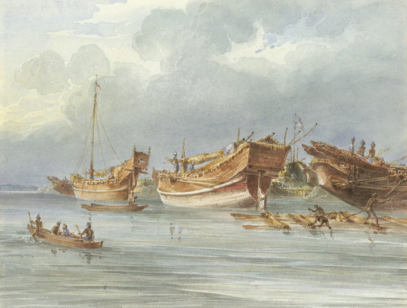
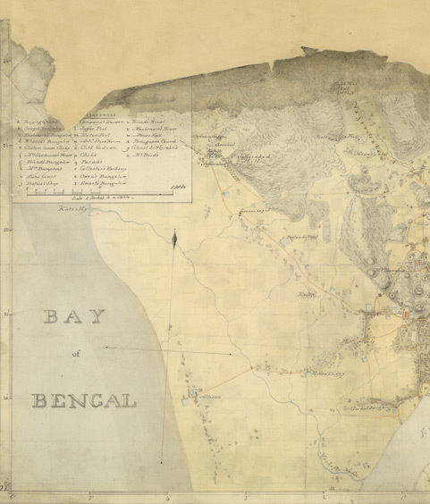
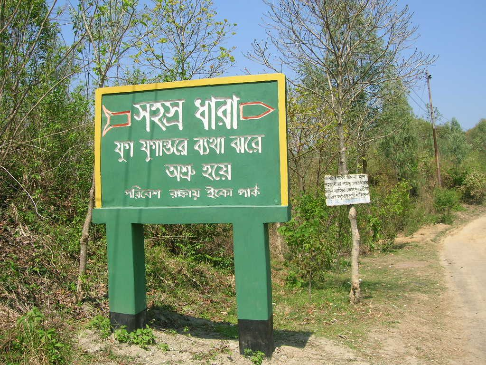
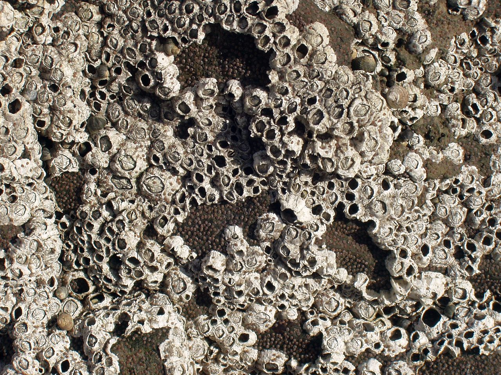
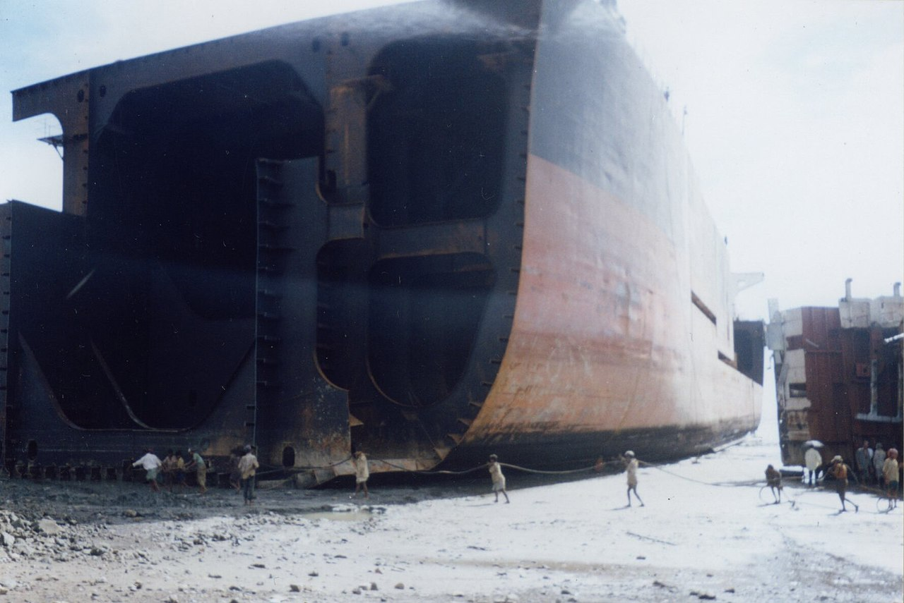
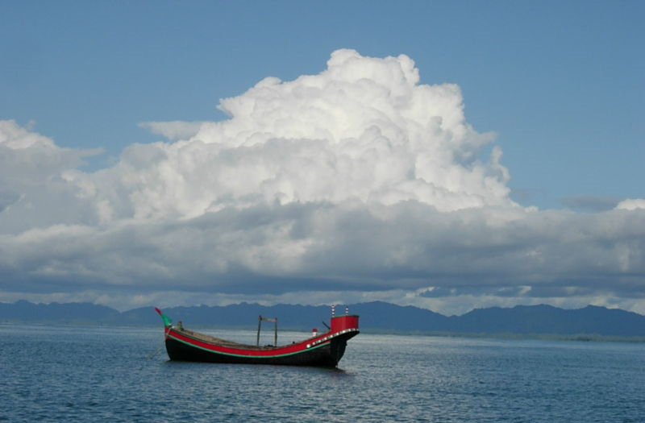
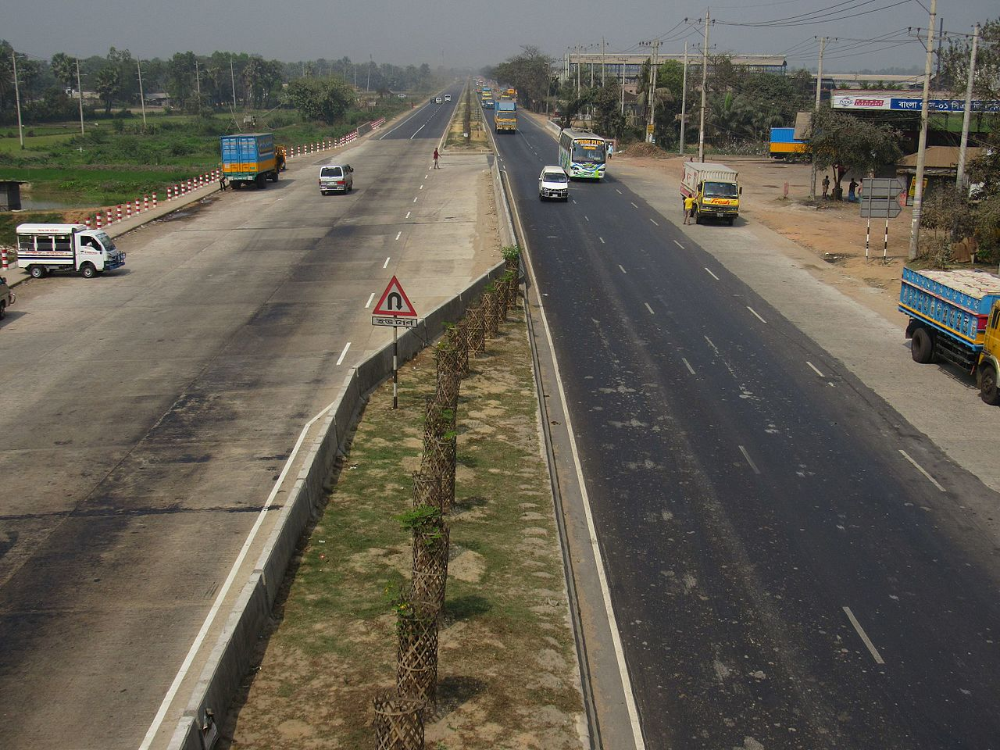

">
Today We know about Sitakunda
Sitakunda Upazila
সীতাকুণ্ড Shitakunḍo, IPA: [ʂitakunɖo]) is an upazila in the Chattogram District of Chattogram Division, Bangladesh. It includes one urban settlement, the Sitakunda Town, and 10 unions. Sitakunda is the home of the country's first eco-park, as well as alternative energy projects, specifically wind energy and geothermal power.
Sitakunda is one of the oldest sites of human habitation in Bangladesh. During much of its history, it was ruled alternatively by various Buddhist rulers of Myanmar in the east and Muslims rulers of Bengal in the west. For a brief period in the 8th century, it was ruled by the Buddhist Pala Empire of India. The eastern rulers originated from the Kingdom of Arakan, the Mrauk U dynasty, Arakanese pirates and the Pagan Kingdom. The western rulers came from the Sultanate of Bengal and the Mughal province (Suba) of Bangala. European rule of Sitakunda was heralded by Portuguese privateers in 16th and 17th centuries, who ruled together with the pirates; and the British Raj in 18th and 19th centuries, who unified Sitakunda into the rest of the Chittagong District. Diderul Alam is the Current Member of parliament of Sitakunda
Economic development in Sitakunda is largely driven by the Dhaka-Chittagong Highway and the railway. Though Sitakunda is predominantly an agricultural area, it also has the largest ship breaking industry in the world.[1][2] The industry has been accused of neglecting workers' rights, especially concerning work safety practices and child labor. It has also been accused of harming the environment, particularly by causing soil contamination. Sitakunda's ecosystems are further threatened by deforestation, over-fishing, and groundwater contamination. The upazila is also susceptible to natural hazards such as earthquakes, cyclones, and storm surges. It lies on one of the most active seismic faults in Bangladesh, the Sitakunda–Teknaf fault.

History
Sitakunda has been occupied by humans since the Neolithic era; tools associated with the prehistoric Assam group have been found throughout the area.[7] In 1886, shouldered celts manufactured from petrified wood were discovered, as reported by Indian archaeologist Rakhaldas Bandyopadhyay in his book Banglar Itihas, or History of Bengal, (volume I, 1914).[8][9] In 1917, British mineralogist Dr. J. Coggin Brown uncovered more prehistoric celts.[10] Large quantities of pebbles have also been found, but archaeologists have not determined whether they were used in the construction of prehistoric tools.
During the 6th and 7th centuries CE, the Chittagong region was ruled by the Kingdom of Arakan.[11] In the next century, it was briefly ruled by Dharmapala (reign: 770–810) of the Pala Empire.[12] The area was conquered in 1340 by Sultan Fakhruddin Mubarak Shah (reign: 1338–1349) of Sonargaon, who founded the first dynasty of the Sultanate of Bengal.[11] When Sultan Ghiyasuddin Mahmud Shah (reign: 1533–1538) of the last dynasty of the Sultanate of Bengal was defeated in 1538 by Sher Shah Suri of the Sur Dynasty, the Arakanese captured the region again. Batsauphyu (reign: 1459–1482) of the Mrauk U dynasty took advantage of the weakness of Sultan Barbak Shah of Bengal to lead the invasion.[13] In this period, Keyakchu (or Chandrajyoti), a prince of Arakan, established a monastery in Sitakunda.[14] Between 1538 and 1666, Portuguese privateers (known as Firinghis or Harmads) made inroads into Chittagong and ruled the region in alliance with Arakanese pirates. During those 128 years, the eastern coast of Bengal became a home to pirates of Portuguese and Arakanese origins.[13][15][16] For a brief period in 1550, it was taken over by Pagan invaders.[17] In 1666, Mughal commander Bujurg Umed Khan conquered the area.

Geography and climate
Sitakunda Upazila occupies an area of 483.97 square kilometres (186.86 sq mi),[31] which includes 61.61 square kilometres (23.79 sq mi) of forest.[32] It is bordered by Mirsharai to the north, Pahartali to the south, Fatickchhari, Hathazari and Panchlaish to the east, and the Sandwip Channel in the Bay of Bengal to the west.[33] The Sitakunda range is a 32-kilometre (20 mi) long ridge in the center of the upazila, which reaches an altitude of 352 metres (1,155 ft) above sea level at Chandranath or Sitakunda peak, the highest peak in Chittagong District.[16][34] Part of Sitakunda is covered by the low hill ranges, while the rest is in the Bengal flood plain.[34] To the north, Rajbari Tila at 274 metres (899 ft) and Sajidhala at 244 metres (801 ft) are the highest peaks in this range, which drops abruptly to a height of less than 92 metres (302 ft) in the vicinity of Chittagong City to the south.[34] About 5 kilometres (3 mi) north of Sitakunda Town is the Labanakhya saltwater hot spring, which has been proposed as a source of geothermal energy.[35][36] There are two waterfalls in the hills: Sahasradhara (thousand streams) and Suptadhara (hidden stream).[37] Both have been identified as sites requiring special attention for protection and preservation by the National Heritage Foundation of Bangladesh.
An area prone to cyclones and storm surges,[39] Sitakunda was affected by cyclones in 1960, 1963, 1970, 1988, 1991, 1994 and 1997; the cyclones of 29 May 1963, 12 November 1970, 29 April 1991 made landfall.[40] The intra-deltaic coastline is very close to the tectonic interface of the Indian and Burmese plates, as well as the active Andaman–Nicobar fault system, and is often capable of generating tsunamis.[41][42] Cyclone preparedness measures are inadequate for the 200,000 residents of Sitakunda who were estimated to be living in high risk areas after the 1991 cyclone. For every 5,000 people, Sitakunda has only one cyclone shelter, each of which is capable of holding 50 to 60 people. Syedpur Union has eleven, Muradpur eight, Baraiyadhala seven, and Kumira five. Sitakunda municipality, Barabkunda, Bhatiary and Bansbaria have four shelters each. Salimpur has three and Sonaichhari Union has two shelters.
An area prone to cyclones and storm surges,[39] Sitakunda was affected by cyclones in 1960, 1963, 1970, 1988, 1991, 1994 and 1997; the cyclones of 29 May 1963, 12 November 1970, 29 April 1991 made landfall.[40] The intra-deltaic coastline is very close to the tectonic interface of the Indian and Burmese plates, as well as the active Andaman–Nicobar fault system, and is often capable of generating tsunamis.[41][42] Cyclone preparedness measures are inadequate for the 200,000 residents of Sitakunda who were estimated to be living in high risk areas after the 1991 cyclone. For every 5,000 people, Sitakunda has only one cyclone shelter, each of which is capable of holding 50 to 60 people. Syedpur Union has eleven, Muradpur eight, Baraiyadhala seven, and Kumira five. Sitakunda municipality, Barabkunda, Bhatiary and Bansbaria have four shelters each. Salimpur has three and Sonaichhari Union has two shelters.

Geology
The geological structure of Sitakunda, 70 kilometres (43 mi) long and 10 kilometres (6 mi) wide, is one of the westernmost structures of Chittagong and Chittagong Hill Tracts, delimited by the Feni River in the north, the Karnaphuli River in the south, the Halda River in the east and the Sandwip Channel in the west.[51] The Sitakunda Range acts as a water divide between the Halda Valley and the Sandwip Channel. The 88 kilometres (55 mi) -long Halda flows from Khagrachari to the Bay of Bangal, and is one of the six tributaries of Karnafuli, the major river in the area.[52] Sandwip Channel represents the northern end of the western part of the Chittagong-Tripura Folded Belt.
The structure contains a thick sedimentary sequence of sandstone, shale and siltstone. The exposed sedimentary rock sequences except limestone, 6,500 metres (21,325 ft) thick in an average, provide no difference in overall lithology of Chittagong and Chittagong Hill Tracts.[51] The Sitakunda fold is an elongated, asymmetrical, box-type double plunging anticline. Both the gently dipping eastern and steeper western flanks of the anticline are truncated abruptly by the alluvial plain of the Feni River.[51] For a lack of infrastructure in Bangladesh, this anticline is one of the few regularly surveyed structures in the country.[54] The syncline from Sitakunda separates the eastern end of the Feni Structure located in the folded flank of the Bengal Foredeep.

Demography
According to the census of 2001, Sitakunda had a population of 298,528 distributed to 55,837 units of households (average household size 5.3), including 163,561 men and 134,967 women, or a gender ratio of 121:100. The average population of component administrative units of the upazila are 4,072 for wards, 1,666 for mahallas, 29,853 for unions, 5,060 for mouzas (revenue villages) and 5,060 for villages reported by the census.[32] Out of the 69 mauzas here, 8 have less than 50 households, while 27 have more than 600 households.[32] Of the villages, 8 have a population of less than 250, while 29 have more than 2,500.[32] As of 2001, the population density of Sitakunda was 692 inhabitants per square kilometre (1,792/sq mi).
Apart from the Bengali majority, there are a number of small communities of ethnic minorities in the area. Many of the resident Rakhine people are believed to have settled here during the Arakanese rule of Chittagong (1459–1666), though the event is not historically traceable.[64] The Rakhine population in Khagrachari District migrated from the surrounding area and built up their permanent abode at Ramgarh in the 19th century.[64] Other ethnic groups include the recently migrated Tripuri people.[65] In the District of Chittagong that includes Sitakunda, the population ratio by religion in 2001 was Muslim 83.92%, Hindu 13.76%, Buddhist 2.01% and Christian 0.12%, with 0.19% following other religions. In 1981, it was Muslim 82.79%, Hindu 14.6%, Buddhist 2.23% and Christian 0.21%, with 0.19% following other religions.[66] Chittagonian, a derivative of Bengali spoken by 14 million people mainly in the Chittagong district,[67] is the dominant language.

Administration
Sitakunda as a thana came into existence in 1879, and was renamed to Sitakunda Upazila in 1983.[68] It ranks third in area and sixth in population out of the 26 upazilas and thanas of Chittagong.[32] Sitakunda Town, with an area of 28.63 square kilometres (11.05 sq mi) and a population of 36,650, is the administrative center and the sole municipality (Pourashabha) of Sitakunda Upazila.[69] Shafiul Alam is the mayor of the town, gaining a landslide win over his nearest contender M Abul Kalam Azad in the 2008 mayoral election.[70] The rest of the area is rural and organized into 10 union councils (union parishads), namely Banshbaria, Barabkunda, Bariadyala, Bhatiari, Kumira, Muradpur, Salimpur, Sonaichhari, Saidpur and Bhatiari Cantonment Area.[32] The area is divided into 69 mauzas and 88 villages.[71] Along with neighboring towns such as Hathazari, Fateyabad, Patiya and Boalkhali, Sitakunda Town was developed as a satellite town to relieve the increasing population pressure on Chittagong, with Bhatiari and Sadar unions selected as zones for industrialization, like South Halishahar and Kalurghat.[72] In the 2009 Upazila elections, Abdullah Al Baker Bhuiyan was elected the Upazila Chairman, while Advocate MN Mustafa Nur and Nazmun Nahar were elected vice chairmen.
Sitakunda Upazila makes the 280th electoral district in Bangladesh, identified as Chittagong-3.[74] In the 2008 general election, A.B.M. Abul Kashem Master of Bangladesh Awami League (AL) was elected as the member of parliament, defeating his nearest opponent Mohammad Aslam Chowdhury of Bangladesh Nationalist Party (BNP).[75] In the previous election held in 2001, Siddiki had defeated Kasem.[76] M Akteruzzaman is the Upazila Nirbahi Officer, the chief executive of the upazila.[77] The upazila is served by a court presided over by a first-class magistrate.[78] The Power Development Board is responsible for supplying electricity to the upazila, but due to power outages the industries in the area are strictly constrained.[79] Anwarul Kabir Talukder, the State Minister for Power, lost his job on 29 September 2006 after hundreds of demonstrators in Sitakunda blocked the Dhaka–Chittagong highway in protest at the lack of electricity; violence also erupted elsewhere in Bangladesh.[80][81] In case of fire, the services are brought in from the neighboring city of Chittagong.[82] A proposed Kumira–Sitakunda Hill Water Reservoir Project to supply safe drinking water is to be undertaken by the government.[83]
Economy
The ship breaking industry in Sitakunda has surpassed similar industries in India and Pakistan to become the largest in the world.[1][2] As of August 2007, over 1,500,000 metric tons (1,476,310 long tons) of iron had been produced from the scrapping of about 20 ships in the 19 functional ship yards scattered over 8 square kilometres (3 sq mi) along the coast of Sitakunda 8–10 kilometres (5–6 mi) from Chittagong, near Fouzderhat. Local re-rolling mills, as well as similar mills, process the scrap iron.[29][84][85] Bangladesh, with no local metal ore mining industry of its own, is dependent on ship-breaking for its domestic steel requirements; the re-rolling mills alone substitute for import of about 1,200,000 metric tons (1,181,048 long tons) of billets and other raw materials.[29] There are 70 companies registered as ship breakers in Chittagong, employing 2,000 regular and 25,000 semi-skilled and unskilled workers.[85] Organized under the Bangladesh Ship Breakers Association, (BSBA),[25] these include companies within large local conglomerates that sought ISO certificates.[86]
The industry has come under threat, both from a decline in the number of ships scrapped annually – down from 70–80 to about 20[84] – and because of environmental and work safety concerns.[26] There have been complaints that journalists and human rights activists are being barred from the ship breaking yards.[87] The ship breaking industry is purportedly damaging the local ecology as well, taking a toll on the fish population and soil quality.[88] A survey conducted by students of the Institute of Marine Science of Chittagong University in 2007 revealed that the soil of the locality is polluted by heavy metals including mercury (0.5 to 2.7 ppm), lead (0.5 to 21.8 ppm), chromium (220 ppm), cadmium (0.3 to 2.9 ppm), iron (2.6 to 5.6 ppm), calcium (5.2 to 23.2 ppm) and magnesium (6.5 to 10.57 ppm).[29][89] Safety standards in the industry are low; between 1995 and 2005, 150 workers were killed and 576 were maimed or injured.[90] The main causes of death were fire or explosion, suffocation and inhaling CO2. These old ships also contain hazardous substances like asbestos, lead paint, heavy metals and PCBs.[91] The workers are paid US$1.75 a day and have little access to medical treatment.[92] Among the workers, 41% of are aged between 18 and 22 years,[93] and many are reported to be as young as 10 years of age.[94] There have also been allegations of large quantities of steel and non-ferrous items, such as bronze, aluminum, copper, and bronze-amalgam recovered from ship breaking being smuggled out of Bangladesh.[95] There also are reports of pirates targeting tugboats pulling ships in.


Transport and communication
The Dhaka–Chittagong Highway runs through Sitakunda, connecting the two largest cities in Bangladesh. A workshop conducted by Asian Development Bank (ADB) estimated that improving the highway would increase Bangladesh's GDP by 1% and its foreign trade by 20%.[107] This roadlink between the two cities existed in the pre-railway days[108] and has been identified as a part of the medieval southern Silk Road.[109] In 2006, ADB and the World Bank announced a plan to help Bangladesh build a second highway between Dhaka and Chittagong,[110] which would be a part of the Asian Highway Network
Historically, the rail transportation system drove developments in Chittagong and the surrounding areas, including Sitakunda.[72] The rail tracks were established as part of the Bengal Assam Railway in 1898, originally running from Chittagong to Badarpur, with branches to Silchar and Laksam.[108] In September 1878, Sitakunda was included in the East Bengal Circle of Railway Mail Service (RMS) along with rest of the district.[112] By 1904, the track system was extended to Chandpur to connect river boat traffic between Goalanda and Kolkata.[108] Approximately 37 kilometres (23 mi) of railroads stop at six rail stations.[33] Currently, there is no express train service between Sitakunda and Chittagong, though intercity expresses (Sylhet–Chittagong, Chandpur–Chittagong, and Dhaka–Chittagong) stop at Sitakunda station and carry a small share of the commuter traffic load.[72] By 2003, there were a total of 112 kilometres (70 mi) of paved roads in the upazila, along with 256 kilometres (159 mi) of mud roads, as well as five ferry-gauts or river docks for the use of barge-type ferryboats. The traditional bullock carts are now rarely seen in the upazila.
Pilgrimage sites
Nazrul Islam’s visits to Chittagong

Weary of struggles, I, the great rebel,
Shall rest in quiet only when I find
The sky and the air free of the piteous groans of the oppressed.
Only when the battle fields are cleared of jingling bloody sabres
Shall, I, weary of struggles, rest in quiet,
Follow Us
facebook
Sitakunda,Chittagong